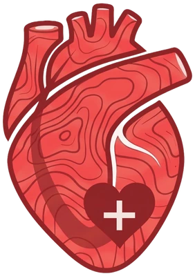

MAPQuest
Blood pressure without a pulse
Visitor
Run —
Live
Public view
Time in cuff
0 s
Release speed
—
Now
MAPQuest
Finding the moment blood came back
Live
Technical view
Close-up: blood volume
How the corner is found
1
Fit the drain.
With the artery shut, blood slowly leaves the forearm. That slope is the baseline.
2
Find the corner.
Where the curve leaves the baseline for good. Its cuff pressure is the reading.
3
Allow a soft start.
Slow releases refill gradually, so the fit may bend (p = 2) instead of snapping.
Confidence checks
Heartbeat in the forearm vs 3× its stopped level
Arm motion, forearm IMU (limit 20 °/s)
How well does this work?
Bench: refill onset read −6.2 ± 7.9 mmHg against systolic over 8 slow manual runs.
Cuff controller
Safety margins
Hardware
Link and events
Connecting…
Run
Technical
Refresh
Zero
Start
Deflate
Stop